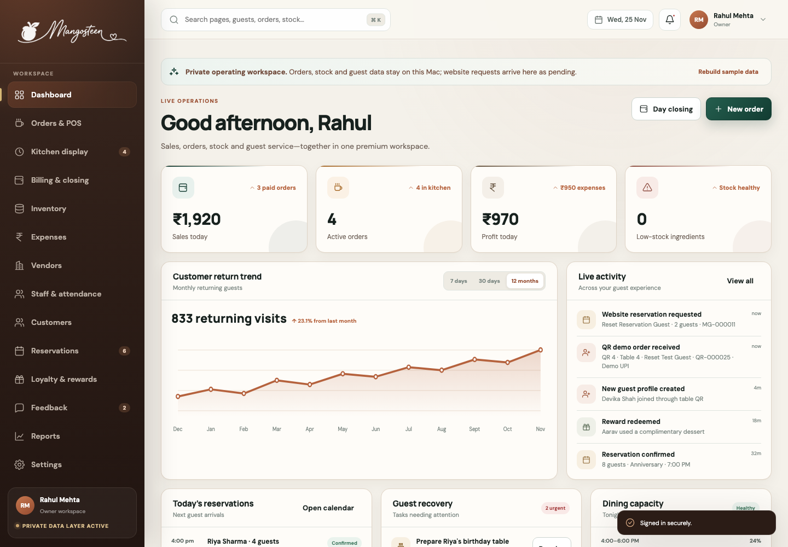

25 November 2026 · Local implementation only. No deployment. No new marketing design or animation engine.
mangosteen-legacy-frontend-backup, commit a89e67c. Includes all previously untracked review captures and Blender pipeline work.mangosteen-clean-rebuild.2b1b923 and 1c960ac.archives/rejected-frontends/complete-reset-2026-11-25/. The prior cinematic archive remains untouched. Ignored environment configuration and existing database files were not added to Git, modified or removed.The holding page contains the existing Mangosteen logo, Explore Menu and Reserve a Table only. New marketing code is isolated in src/features/marketing/; future directories contain only .gitkeep files. There is no transition wrapper, scroll manager, canvas or animation on the holding page.
Removed route registrations: /experience, /reference-experience, /claude-vfx-lab. These URLs now fall back to the holding page. The older eight-chapter, ERA and food-vfx-lab engines were already outside the active application; they remain archived, not reintroduced.
Removed direct packages: gsap, three, @types/three. Six exclusively associated transitive packages were removed by npm: @dimforge/rapier3d-compat, @tweenjs/tween.js, @types/stats.js, @types/webxr, fflate and meshoptimizer. React, Vite, TypeScript, Playwright, QR generation and backend dependencies remain.
Archived 42.08 MiB of marketing-only source, models, textures and layers outside the active public/build trees. This is an archival move, not a claim of disk space recovered. Cleared 9,513,179 bytes of regenerable Vite cache and rebuilt the production output. The temporary checkpoint verification copy was removed after testing. No system-wide cleanup occurred.
All 83 protected source, configuration, visual and business files match their pre-reset SHA-256 hashes. Menu routes, 131 dishes, 13 categories, prices, descriptions, search, favourites, selection, Table 4 QR context, reservation UI/logic, seating data, CRM/admin, authentication, orders, backend APIs, integrations and original assets remain unchanged. Production/customer records were not touched.
npm run build:vercel) passes. Nine production preview routes load with no broken visible images or page exceptions, including the packaged CRM login. No deployment was performed.git diff --check passes.[+0-9 ()-]{7,24} as invalid in its v-mode regular expression parser. Request submission and server validation pass; the protected form was left unchanged. No other browser console errors or page exceptions occurred in the final workflow runs.55 retained visual/source assets inventoried with paths, dimensions, sizes and SHA-256 hashes. All 4 supplied high-resolution photos, 6 gallery photos, 7 experience derivatives, 7 mobile crops, 2 retained dining crops, 5 stock food images, 13 AI menu illustrations, menu decoration, brand files, supplied video and Blender sources are retained.
Open visual inventory and labelled contact sheets · CSV inventory · Combined cafe and food contact sheet
Clean holding page · Approved menu · Table 4 QR route
Available storage at final audit: 2.52 GiB (initial rounded df reading: 2.5 GiB). Storage fluctuates with system activity; no recovery amount is inferred from this difference.
src/features/architectural-experiencesrc/features/claude-vfx-labsrc/features/reference-experiencesrc/app/PageTransitions.tsxsrc/app/page-transitions.csssrc/pages/HomePage.tsxsrc/styles/holding.csspublic/basispublic/modelspublic/materialspublic/claude-vfxpublic/assets/3dscripts/package-architecture-review.pyscripts/render-reference-linen.pyscripts/review-recording-match.mjsscripts/review-reference-experience.mjsscripts/review-palazzo-motion.mjsscripts/record-reference-experience.mjsscripts/review-architecture.mjsscripts/fetch-architectural-materials.mjspublic/reference-experience11 of 14 comparable captures are pixel-identical. Small differences in category/search rendering and the hovered reservation-time border occupy at most 0.132% of their respective images. No protected source/style/asset changed. Baseline screenshots were recaptured from the actual a89e67c checkpoint in an isolated temporary server after detecting an initial loading-fallback capture.